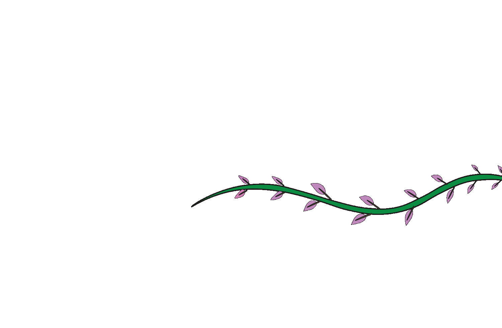

De Tropentuin ligt op een unieke plek tussen het Koninklijk Instituut voor de Tropen en het Oosterpark.
Adres:
Tropentuin, Linnaeusstraat 2, 1092 CK Amsterdam (tussen het Koninklijk Instituut voor de Tropen en het Oosterpark)
Openingstijden:
Maandag t/m Vrijdag: 8:00 - 21:00
Zaterdag en Zondag: Gesloten